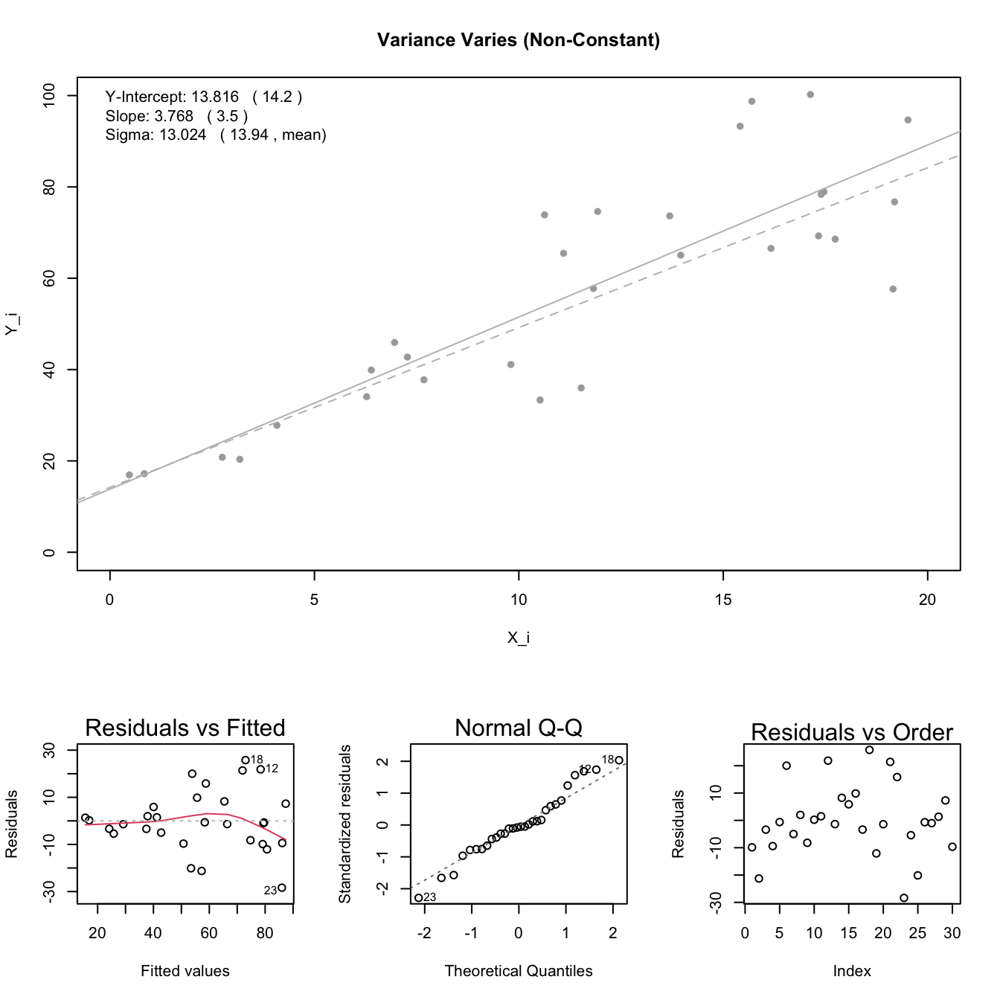
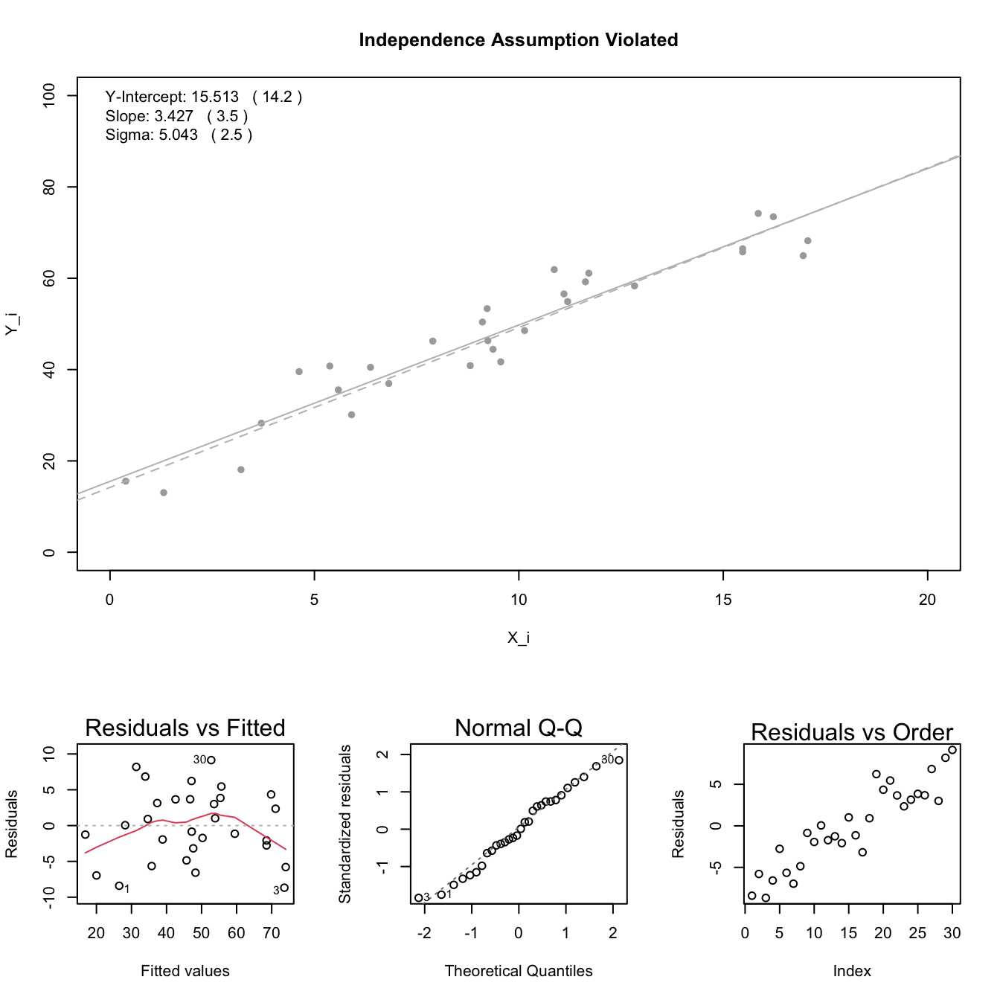

6 Residual Plots and Regression Assumptions
There are five assumptions that should be met for the mathematical model of simple linear regression to be appropriate.
Each assumption is labeled in the regression equation below.
- The regression relation between \(Y\) and \(X\) is linear.
- The error terms are normally distributed with \(E\{\epsilon_i\}=0\).
- The variance of the error terms is constant over all \(X\) values.
- The \(X\) values can be considered fixed and measured without error.
- The error terms are independent.
Regression Equation \[ Y_i = \underbrace{\beta_0 + \beta_1 \overbrace{X_i}^\text{#4}}_{\text{#1}} + \epsilon_i \quad \text{where} \ \overbrace{\epsilon_i \sim}^\text{#5} \overbrace{N(0}^\text{#2}, \overbrace{\sigma^2}^\text{#3}) \]
Residuals are used to diagnose departures from the regression assumptions.
As shown above, the regression equation makes several claims, or assumptions, about the error terms \(\epsilon_i\), specifically 2, 3, and 5 of the regression assumptions are hidden inside the statement \(\epsilon_i \sim N(0, \sigma^2)\) as shown here \[ \epsilon_i \underbrace{\sim}_{\substack{\text{Independent} \\ \text{Errors}}} \overbrace{N}^{\substack{\text{Normally} \\ \text{distributed}}}(\underbrace{0}_{\substack{\text{mean of} \\ \text{zero}}}, \underbrace{\sigma^2}_{\substack{\text{Constant} \\ \text{Variance}}}) \]
While the actual error terms (\(\epsilon_i\)) are unknown in real life, the residuals (\(r_i\)) are known. Thus, we can use the residuals to check if the assumptions of the regression appear to be satisfied or not.
6.1 Residuals versus Fitted-values Plot: Checks Assumptions #1 and #3
|
|
The linear relationship and constant variance assumptions can be diagnosed using a residuals versus fitted-values plot. The fitted values are the \(\hat{Y}_i\). The residuals are the \(r_i\). This plot compares the residual to the magnitude of the fitted-value. No discernable pattern in this plot is desirable. |

The residuals versus fitted values plot checks for departures from the linear relation assumption and the constant variance assumption.
The linear relation is assumed to be satisfied if there are no apparent trends in the plot.
The constant variance assumption is assumed to be satisfied if the vertical spread of the residuals remains roughly consistent across all fitted values.
The left column of plots below show scenarios that would be considered not linear. The right column of plots show scenarios that would be considered linear, but lacking constant variance. The middle column of plots shows scenarios that would satisfy both assumptions, linear and constant variance.

6.2 Q-Q Plot of the Residuals: Checks Assumption #2

|
The normality of the error terms can be assessed by considering a normal probability plot (Q-Q Plot) of the residuals. If the residuals appear to be normal, then the error terms are also considered to be normal. If the residuals do not appear to be normal, then the error terms are also assumed to violate the normality assumption. |
There are four main trends that occur in a normal probability plot. Examples of each are plotted below with a histogram of the data next to the normal probability plot.
Often the plot is called a Q-Q Plot, which stands for quantile-quantile plot. The idea is to compare the observed distribution of data to what the distribution should look like in theory if it was normal. Q-Q Plots are more general than normal probability plots because they can be used with any theoretical distribution, not just the normal distribution.


6.3 Residuals versus Order Plot: Checks Assumption #5

|
When the data is collected in a specific order, or has some other important ordering to it, then the independence of the error terms can be assessed. This is typically done by plotting the residuals against their order of occurrance. If any dramatic trends are visible in the plot, then the independence assumption is violated. |
Plotting the residuals against the order in which the data was collected provides insight as to whether or not the observations can be considered independent. If the plot shows no trend, then the error terms are considered independent and the regression assumption satisfied. If there is a visible trend in the plot, then the regression assumption is likely violated.

6.4 Problems from Failed Assumptions
There are various problems that can arise when certain of the regression assumptions are not satisfied.
6.4.1 Lack of Linearity
When the linearity assumption is violated, pretty much everything we obtain from the regression summary is no longer meaningful.
The y-intercept estimate can be drastically off from its actual true value.
Important model information is lost by trying to use a simple slope term \(\beta_1\) to describe the model with respect to \(X\).
The residual standard error will be much higher than it otherwise would be because of curvature patterns in the data that the line cannot capture. Thus, R-squared will be lower than it otherwise should be.
P-values can become non-significant, when in fact there is a strong pattern in the data, but that pattern just cannot be captured by a simple line.
*Normality of the errors is often put into question as well when a simplified line is used to try to capture a more complicated curved model.
The plot below demonstrate these difficulties.

6.4.2 Non-normal Error Terms
When the normality assumption for the error terms is violated, not all is lost. In fact, the estimate of the slope and intercept are still often fairly meaningful. However, it is unwise to put too much trust in the residual standard error as an estimate of the standard deviation \(\sigma\). This is because the standard deviation in skewed distributions does not carry the same meaning it has in normal distributions.

6.4.3 Constant Variance Assumption Violated
| True | Estimated | |
|---|---|---|
| Y-Intercept | 14.2 | 13.82 |
| Slope | 3.5 | 3.768 |
| Sigma | 2.5 | 13.02 |

6.4.4 Independence Assumption Violated
| True | Estimated | |
|---|---|---|
| Y-Intercept | 14.2 | 15.51 |
| Slope | 3.5 | 3.427 |
| Sigma | 2.5 | 5.043 |

6.4.5 Outliers Present
| True | Estimated | |
|---|---|---|
| Y-Intercept | 14.2 | 12.44 |
| Slope | 3.5 | 3.505 |
| Sigma | 2.5 | 6.224 |

6.4.6 All Assumptions Satisfied
# Create Data from a True Model
n <- 30 #sample size
beta_0 <- 14.2 #True y-intercept
beta_1 <- 3.5 #True slope
X_i <- runif(n, 0, 20) #Sample of X-values
sigma <- 2.5 #True standard deviation
epsilon_i <- rnorm(n, 0, sigma) #normally distributed errors
Y_i <- beta_0 + beta_1*X_i + epsilon_i
#Sample of Y-values from model
# Plot the Data and Fitted Model
mylm <- lm(Y_i ~ X_i) #Fit Model to Data
layout(matrix(c(1,1,1,2,3,4), 2, 3, byrow = TRUE),
widths=c(2,2,2), heights=c(4,2,2))
#create plot panel
plot(Y_i ~ X_i, #Plot the data
pch=16,
col="darkgray",
xlim=c(0,20),
ylim=c(0,100),
main="All Assumptions Satisfied")
abline(mylm, col="gray") #Add fitted line to plot
abline(beta_0, beta_1, #Add True line to plot
col="gray", lty=2)
#Summarize the Model Fit
pander(rbind(`Y-Intercept` = c(True = beta_0, Estimated = mylm$coef[[1]]),
Slope = c(True = beta_1, Estimated = mylm$coef[[2]]),
Sigma = c(True = sigma, Estimated = summary(mylm)$sigma)))| True | Estimated | |
|---|---|---|
| Y-Intercept | 14.2 | 14.1 |
| Slope | 3.5 | 3.488 |
| Sigma | 2.5 | 2.897 |
#Add summary to plot
legend("topleft", legend=c(paste("Y-Intercept:", round(mylm$coef[[1]], 3), " (", beta_0, ")"),
paste("Slope:", round(mylm$coef[[2]], 3), " (", beta_1, ")"),
paste("Sigma:", round(summary(mylm)$sigma, 3), " (", sigma, ")")), bty='n')
#Draw diagnostic plots
plot(mylm, which=1:2)
plot(mylm$residuals, ylab="Residuals")
mtext("Residuals vs Order", side=3)